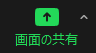
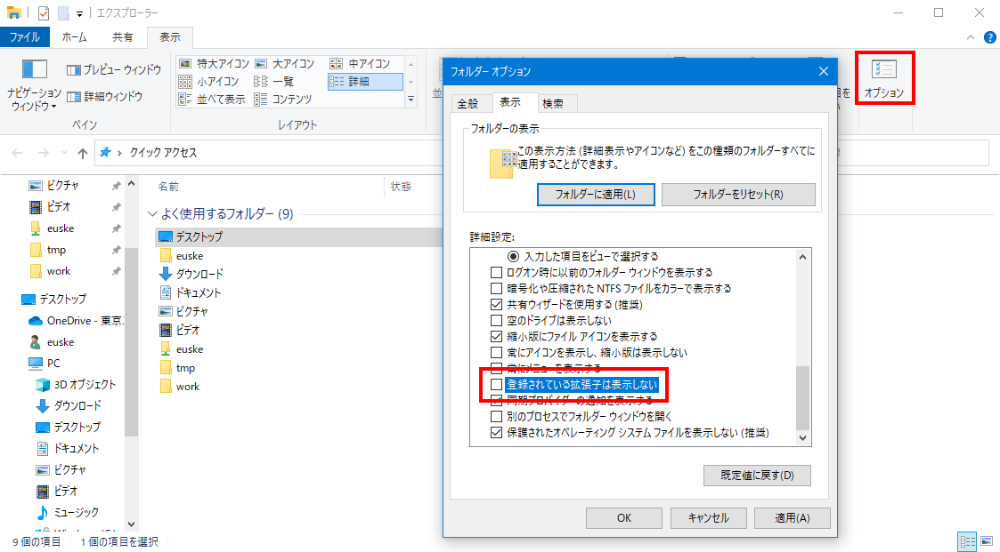
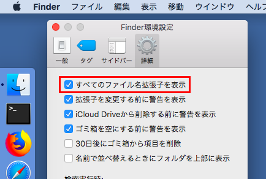
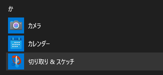
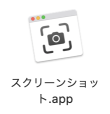

第6回 - 情報の圧縮とは何か? インターネットのしくみ詳細
2022年5月23日
- 前回までのあらすじ
- コンピュータ上の情報 (復習)
- データ圧縮とは
- インターネットのしくみ (復習)
- 本日のまとめ
雑談:
話題: 大学の勉強で役に立ったこと
連絡事項
情報リテラシ第二 1a (IL2) を
まだ履修申告していない人は、追加申告が 7/18 まで 可能です。
注意:
1aクラスの人は、2Qでも 1aクラスを選んでください。
0. 前回までのあらすじ
- 研究とは、調べることである。
- 真実 = 資料・論文。
- Wikipedia は、疑ってかかるべし。
- 著作権は、じつは世の中を楽しくするための仕組みだった。
- コンピュータの4大装置とは何か?
- コンピュータ上では、あらゆる情報は「?」と「?」のみで表される。
- 「1ビット」とは何か説明せよ。
- 「1バイト」とは何か説明せよ。
先週の小課題 3.で自分が発見した
Wikipedia のウソをグループ発表する。
ブレイクアウトルーム (最大5名) に分かれて、
各自 Zoom の画面共有を使って発表せよ。
- ブレイクアウトルームに分かれたのち、あいうえお順で
氏名が最初にくる人 (TAがいるグループの場合は、TA) が
そのグループの進行を担当する。
(といっても「次の人、お願いします」というだけ)
- 発表も氏名のあいうえお順で行う。発表時間は各自 1〜2分。
- 発表者はまず自分のマイクをオンにし (カメラの使用はしなくてもよい)、
Zoom の 画面の共有 ボタンを押して、自分のパソコン画面を共有する。
(注意: 間違って変なウィンドウを見せないこと!)

- まずウソを発見した Wikipedia の当該ページを見せ、
それのどこが間違っていたのか (あるいは出典が欠けているか) を説明する。
つぎに自分が発見した正しい内容 (あるいは出典) を示す証拠ページを開き、説明する。
- 説明が終わったら、共有の停止 ボタンを押し、
次の人に順番をまわす。
- 全員の説明が終わったらブレイクアウトルームを抜ける。(合計10分)
1. コンピュータ上の情報 (復習)
1.1. 情報 (データ) とは何だったか?
- パソコン上で扱う情報は、すべて 0 と 1 の組み合わせで表される:
- 数値
- 文字(列) / テキスト
- 静止画像
- 音声
- 動画
- ...
1.2. データの「形式」とは?
- パソコン (記憶装置) 上のデータは、
すべてファイルに保存される。
- 各ファイルには、ファイル名と拡張子がついている。
- ファイルの中身 … 0 と 1 の羅列。
- 0と1をどのように解釈するかがわからないと、正しく表示できない。
(データの形式)
- パソコンでは、データの形式は拡張子によって区別している:
myfile.txt
ファイル拡張子の例
- テキストファイル:
.txt
- HTMLファイル (テキストファイル):
.htm または .html
- JPEG画像ファイル:
.jpg または .jpeg
- PNG画像ファイル:
.png
- 音声ファイル:
.mp3 など
- 動画ファイル:
.mp4, .mov など
- 圧縮ファイル:
.zip
- 実行可能ファイル(アプリ):
.app, .exe
- パソコン上で、なんらかの画像ファイルを作成する。
- ファイル名を「
.jpg」などから「.txt」に変換し、
それをメモ帳で開いてみる。
- ファイル名を「
.txt」から「.jpg」に戻し、
ふたたび開いてみる。
ファイル拡張子を表示させる (Windows)
Windowsでは、ファイルの拡張子はふだんは表示されない設定になっている。
これを変更するには、以下のようにする:
- エクスプローラーから フォルダー オプションウィンドウを開く。
- 表示 タブをクリックし、登録されている拡張子は表示しない の
チェックをはずす。

ファイル拡張子を表示させる (Mac)
Macでは、ファイルの拡張子はふだんは表示されない設定になっている。
これを変更するには、以下のようにする:
- Finderをクリックし、メニューから 環境設定... を選ぶ。
- 詳細 タブをクリックし、
すべてのファイル名拡張子を表示 にチェックを入れる。

- データ (data) … 情報
- メタデータ (metadata) … 情報に関する情報
ほぼすべてのデータには、
メタデータ がついているのが普通である。
パソコンで扱うメタデータには以下のようなものがある:
- ファイル名 (その 0 と 1 の羅列についた名前)
- 拡張子 (データ形式、その 0 と 1 をどのように解釈すべきか)
- ファイルサイズ (データの大きさ)
- 作成日時
- 変更日時
- 作成者, etc.
- インターネットから、
テキスト形式のファイルと、
画像形式のファイルをそれぞれ 1つずつダウンロードせよ。
- ダウロードしたファイルの拡張子を確認せよ。
- 各ファイルのアイコンを右クリックし、
- Windows の場合 … プロパティ... を実行せよ。
- Mac の場合 … 情報を見る を実行せよ。
ひとつのファイルには、内容の他にどのようなメタデータが付随しているかを見よ。
2. データ圧縮とは
- 携帯のデータ通信料: 月20GB で 6000円〜。
- データ通信料のめやす
「こんな大量のデータを扱うのはイヤだ」
- データ量を減らす技術: データ圧縮
2.1. データ圧縮技術の種類
- 可逆圧縮 … もとに戻る (可逆) 圧縮。
PNG画像 (くり返しを省く)
- 非可逆圧縮 … 完全にはもとに戻らない (非可逆) 圧縮。
JPEG画像 (人間が気づかない部分を省く: 約1/10倍)


MPEG動画 (変化しない部分を省く: 約1/100倍)
2.2. 圧縮による情報量の削減
データ圧縮技術は、こんにちデータを送受信する際にはほぼ必須となっている。
3. インターネットのしくみ (復習)
- 今日、多くのデータはネットワークからダウンロードされている。
- コンピュータから見ると、ネットワークは巨大な入出力装置である。
3.1. サーバとクライアント
ネットワークにつながっているコンピュータには2種類ある:
- クライアント (客) … 勝手な時間に来店する。
例: スマートフォン, PC, 冷蔵庫, ...
- サーバ (店) … 24時間つねに開店している。
例: ルータ, 箱(のようなもの)
- インターネット上のいろいろな役に立つウェブサイト:
3.2. IPアドレスとは
- インターネットにつながっているすべてのコンピュータが持つ固有のアドレス。
サーバ・クライアントのどちらにも必要。
これがなければインターネットは使えない。
- 8ビット(0〜255) × 4つの数字で表される。
- 49.212.234.52
- 131.112.244.84
- ...
- 原則、同じアドレスは世界中に2つと存在しない。
3.3. 実際のパケット
- ケーブルの中には、複数のデータ (IPパケット) が流れている。
- 各IPパケットには、行き先をあらわす IPアドレス がついている。
- データの種類は、各パケットにつけられた「ポート番号」および
「通信手順 (プロトコル)」で区別する。
- 電子メール… SMTP (Simple Mail Transfer Protocol, ポート番号 25)
- ウェブページ… HTTP (Hyper Text Transfer Protocol, ポート番号 80 あるいは 443)
3.4. URLとは?
- ブラウザの上に表示されている文字列。
"Uniform Resource Locator" の略だが、
「ゆーあーるえる」または単に「ウェブページのアドレス」と呼ばれる。
- インターネット上のデータ (資源) を特定するのに使われる:
https | :// | www.titech.ac.jp | | /education/features/first_year.html |
| プロトコル名 | | ホスト名 (サーバの名前) | | ファイル名 |
3.5. Domain Name System (DNS) とは
- 数字だけの (
131.112.244.84 のような)
IPアドレスは覚えにくいので、
www.titech.ac.jp のような「名前」から
IPアドレスを解決する仕組み。
- サーバの IP アドレスは、名前がついていることが多い。
- たとえば、以下の2つのURLは同じである:
-
http://131.112.242.8/
-
http://www.ocw.titech.ac.jp/
- 電子メールでも使われる:
dareka.aaa@m.titech.ac.jp
(メールサーバのIPアドレス)
- IPアドレスが見つからない場合はエラー。
- 例:
oosamanomimiharobanomimi.com
- 例:
www.igakubu.titech.ac.jp
パソコンには、インターネット上にある特定のサーバが
本当に応答しているか否かを検査するプログラム "ping" が附属している。
ここではそれを使って、実際にいくつかのサーバの応答を検査してみる。
- パソコンで「
コマンド プロンプト」
(Mac の場合は、「ユーティリティ」フォルダ内にある「ターミナル」)
アプリを起動せよ。
- 以下のコマンドを入力し、Enter を押せ:
(コマンドが無反応になった場合は、Ctrl + C を押して止める。)
-
ping 127.0.0.1
(自分自身の PC の応答をチェックする)
-
ping 198.41.0.4
(世界にあるルートサーバの 1つをチェックする)
-
ping a.root-servers.net
(b. と同じサーバをチェックするが、IPアドレスではなく名前で指定する)
- アプリの実行方法がわからない場合は、ウェブサイト
https://pingtool.org/ を使ってもよい。
3.6. World Wide Web (WWW) の動き
- ブラウザに URL "
https://www.titech.ac.jp/" が入力される。
- クライアント (PC) が DNS サーバを使って、この名前を IPアドレス (131.112.244.84) に変換する。
- クライアントが指定されたIPアドレスの WWW サーバにパケットを送る。(HTTP)
- HTMLファイルがサーバからクライアントに送られる:
<!DOCTYPE html>
<html lang="ja">
<title>東京工業大学</title>
<a href="/entrance_information/">入試情報</a>
<a href="/maps/index.html">アクセス</a>
...
- ブラウザがデータを画面上に表示する。
- ユーザがリンクをクリックすると、そのリンク先の URL を使って 2. に戻る。
以下の質問について ○ か × かを答えよ。
- 文字だけのページよりも画像が沢山使われているページのほうが、通信量が多い。
- アドレスに ".jp" がついているサーバは、必ず日本国内にある。
- ブラウザがページを表示している間ずっと、通信が発生している。
ネットを使うことによる個人情報の流出
サーバとクライアントはお互いの IP アドレスを知っているので、
WWW サーバにアクセスするときは、
自分の IP アドレスもサーバに知られている。
これによって、自分に関するさまざまな情報がサーバ側に知られてしまうことがある。
また、IP アドレス以外にも「クッキー (cookie)」と呼ばれるものがある。
これは HTML ファイルと同時にサーバから送られてくる識別情報で、
クライアントは受け取ったクッキーを記憶し、次回以降そのサーバに
アクセスするときつねにその情報を渡すようになっている。
こうするとサーバは、例えば「ログインしたユーザ」に対して別の
情報を渡すことができるが、同時にIPアドレスよりもさらに正確に
「誰がアクセスしてきたか」を把握できることになる。
多くのサイトはクッキーを使ってアクセスしてきた人を追跡している。
3.7. ブラウザがうまく動かない場合
- URL の形式がおかしい。
例: moo://w4i♥zqs♪x>よ-\o/-
- 名前から IPアドレスが変換できない。
例: http://oosamanomimiharobanomimi.com/
- ケーブルが切れている・パケットが到達できない。
例: http://10.10.10.10/
- サーバの電源が切れている。
例: http://192.168.xxx.xxx/
- 「お探しのページは見つかりません」
例: https://www.titech.ac.jp/moo/
- サーバのデータがうまく解釈できない。
ワンポイント
インターネット上の有名なサイトが止まっている場合は、
上のような ping コマンドを使って検査する以外にも、
以下のような「障害チェック」サイトを使って調べることもできる。
4. 本日のまとめ
- コンピュータ上のデータは、すべて 0 と 1 で表される。
- データ圧縮技術のおかげで、通信料金が節約できる。
- インターネットはややこしい。
自分のパソコン上に保管されている「クッキー」の一覧を表示し、
その画面写真 (スクリーンショット) を撮影して
PNG形式のファイルを提出すること。
注意:
スマートフォンのカメラで画面を撮影したものは受けつけない。
クッキーの一覧を見る方法は、使用しているブラウザによって異なる:
- Windows の場合
- ブラウザで Edge を使っている場合は、
メニューから 設定 → Cookieとサイトのアクセス許可 を開く。
(Chrome を使っている場合は自分でやり方を調べること)
撮影するには、スタートメニューから 切り取り・スケッチ を選ぶ。
(あるいは Print Screen キーを押してもよい。)

- Mac の場合
- ブラウザで Safari を使っている場合は、
メニューから 環境設定 → プライバシー →
Webサイトデータを管理... を開く。
撮影するには、Finder のメニューから 表示 →
ユーティリティ を選び、
スクリーンショット を開く。
(あるいは Shift + ⌘ Command + 5 を押してもよい)

- 締め切り: 5月30日 (1週間後)
- 以下のページを開く:
注意:
「授業時に伝えられた合言葉を入力しなさい」という欄に正しい文字を入力しないと先へ進めません。
鍵は授業中および Discord 上でアナウンスします。
- ヒント: 用語がわからない場合は、
クラス共通資料にある
スライドを見ましょう。
Yusuke Shinyama


{kind=link}
{kind=link}
{kind=link}